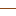

<!doctype html>
<html lang="en">
    <head>
        <meta charset="utf-8">
        <meta http-equiv="X-UA-Compatible" content="IE=edge">
        <meta name="viewport" content="initial-scale=1,user-scalable=no,maximum-scale=1,width=device-width">
        <meta name="mobile-web-app-capable" content="yes">
        <meta name="apple-mobile-web-app-capable" content="yes">
        <link rel="stylesheet" href="css/leaflet.css">
        <link rel="stylesheet" href="css/qgis2web.css">
        <style>
        html, body, #map {
            width: 100%;
            height: 100%;
            padding: 0;
            margin: 0;
        }
        </style>
        <title></title>
    </head>
    <body>
        <div id="map">
        </div>
        <script src="js/qgis2web_expressions.js"></script>
        <script src="js/leaflet.js"></script>
        <script src="js/leaflet.rotatedMarker.js"></script>
        <script src="js/leaflet.pattern.js"></script>
        <script src="js/leaflet-hash.js"></script>
        <script src="js/Autolinker.min.js"></script>
        <script src="js/rbush.min.js"></script>
        <script src="js/labelgun.min.js"></script>
        <script src="js/labels.js"></script>
        <script src="data/CurvasElevacion_0.js"></script>
        <script src="data/DelegacionesCDMX_2.js"></script>
        <script>
        var map = L.map('map', {
            zoomControl:true, maxZoom:15, minZoom:1
        }).fitBounds([[19.1075973662,-99.3257576967],[19.179160717,-99.2158638249]]);
        var hash = new L.Hash(map);
        map.attributionControl.addAttribution('<a href="https://github.com/tomchadwin/qgis2web" target="_blank">qgis2web</a>');
        var bounds_group = new L.featureGroup([]);
        var basemap0 = L.tileLayer('http://stamen-tiles-a.a.ssl.fastly.net/terrain-background/{z}/{x}/{y}.png', {
            attribution: 'Map tiles by <a href="http://stamen.com">Stamen Design</a>, <a href="http://creativecommons.org/licenses/by/3.0">CC BY 3.0</a> &mdash; Map data &copy; <a href="http://www.openstreetmap.org/copyright">OpenStreetMap</a>',
            maxZoom: 18
        });
        basemap0.addTo(map);
        var info = L.control();
        info.onAdd = function (map){
          this._div = L.DomUtil.create('div','info');
          this.update();
          return this._div;
        };

        info.update = function (props){
          this._div.innerHTML = '<h4>Mapa de Relieve</h4>';
        };
        info.addTo(map);
        function setBounds() {
        }
        function pop_CurvasElevacion_0(feature, layer) {
            var popupContent = '<table>\
                    <tr>\
                        <td colspan="2">' + (feature.properties['contour'] !== null ? Autolinker.link(String(feature.properties['contour'])) : '') + '</td>\
                    </tr>\
                </table>';
            layer.bindPopup(popupContent, {maxHeight: 400});
        }

        function style_CurvasElevacion_0_0() {
            return {
                pane: 'pane_CurvasElevacion_0',
                opacity: 1,
                color: 'rgba(139,69,19,1.0)',
                dashArray: '',
                lineCap: 'square',
                lineJoin: 'bevel',
                weight: 1.0,
                fillOpacity: 0,
            }
        }
        map.createPane('pane_CurvasElevacion_0');
        map.getPane('pane_CurvasElevacion_0').style.zIndex = 400;
        map.getPane('pane_CurvasElevacion_0').style['mix-blend-mode'] = 'normal';
        var layer_CurvasElevacion_0 = new L.geoJson(json_CurvasElevacion_0, {
            attribution: '<a href=""></a>',
            pane: 'pane_CurvasElevacion_0',
            onEachFeature: pop_CurvasElevacion_0,
            style: style_CurvasElevacion_0_0,
        });
        bounds_group.addLayer(layer_CurvasElevacion_0);
        map.addLayer(layer_CurvasElevacion_0);
        var img_RelieveDF_1 = 'data/RelieveDF_1.png';
        var img_bounds_RelieveDF_1 = [[18.9987202146,-99.6666608914],[19.7509276615,-98.6650362903]];
        var overlay_RelieveDF_1 = new L.imageOverlay(img_RelieveDF_1, img_bounds_RelieveDF_1);
        bounds_group.addLayer(overlay_RelieveDF_1);
        map.addLayer(overlay_RelieveDF_1);
        function pop_DelegacionesCDMX_2(feature, layer) {
            var popupContent = '<table>\
                    <tr>\
                        <td colspan="2">' + (feature.properties['nombre_del'] !== null ? Autolinker.link(String(feature.properties['nombre_del'])) : '') + '</td>\
                    </tr>\
                </table>';
            layer.bindPopup(popupContent, {maxHeight: 400});
        }

        function style_DelegacionesCDMX_2_0() {
            return {
                pane: 'pane_DelegacionesCDMX_2',
                opacity: 1,
                color: 'rgba(73,91,108,1.0)',
                dashArray: '',
                lineCap: 'butt',
                lineJoin: 'miter',
                weight: 1.0,
                fill: true,
                fillOpacity: 1,
                fillColor: 'rgba(149,160,221,0.0)',
            }
        }
        map.createPane('pane_DelegacionesCDMX_2');
        map.getPane('pane_DelegacionesCDMX_2').style.zIndex = 402;
        map.getPane('pane_DelegacionesCDMX_2').style['mix-blend-mode'] = 'normal';
        var layer_DelegacionesCDMX_2 = new L.geoJson(json_DelegacionesCDMX_2, {
            attribution: '<a href=""></a>',
            pane: 'pane_DelegacionesCDMX_2',
            onEachFeature: pop_DelegacionesCDMX_2,
            style: style_DelegacionesCDMX_2_0,
        });
        bounds_group.addLayer(layer_DelegacionesCDMX_2);
        map.addLayer(layer_DelegacionesCDMX_2);
        var baseMaps = {};
        L.control.layers(baseMaps,{'Límite delegacional ': layer_DelegacionesCDMX_2,'Curvas de elevación ': layer_CurvasElevacion_0,'Orientación y Pendientes</br> ': overlay_RelieveDF_1,},{collapsed:true}).addTo(map);
        setBounds();
        var i = 0;
        layer_CurvasElevacion_0.eachLayer(function(layer) {
            var context = {
                feature: layer.feature,
                variables: {}
            };
            layer.bindTooltip((layer.feature.properties['contour'] !== null?String('<div style="color: #000000; font-size: 6pt; font-family: \'Arial\', sans-serif;">' + layer.feature.properties['contour']) + '</div>':''), {permanent: true, offset: [-0, -16], className: 'css_CurvasElevacion_0'});
            labels.push(layer);
            totalMarkers += 1;
              layer.added = true;
              addLabel(layer, i);
              i++;
        });
        L.ImageOverlay.include({
            getBounds: function () {
                return this._bounds;
            }
        });
        resetLabels([layer_CurvasElevacion_0]);
        map.on("zoomend", function(){
            resetLabels([layer_CurvasElevacion_0]);
        });
        map.on("layeradd", function(){
            resetLabels([layer_CurvasElevacion_0]);
        });
        map.on("layerremove", function(){
            resetLabels([layer_CurvasElevacion_0]);
        });

        L.control.scale().addTo(map);

        </script>
    </body>
</html>
